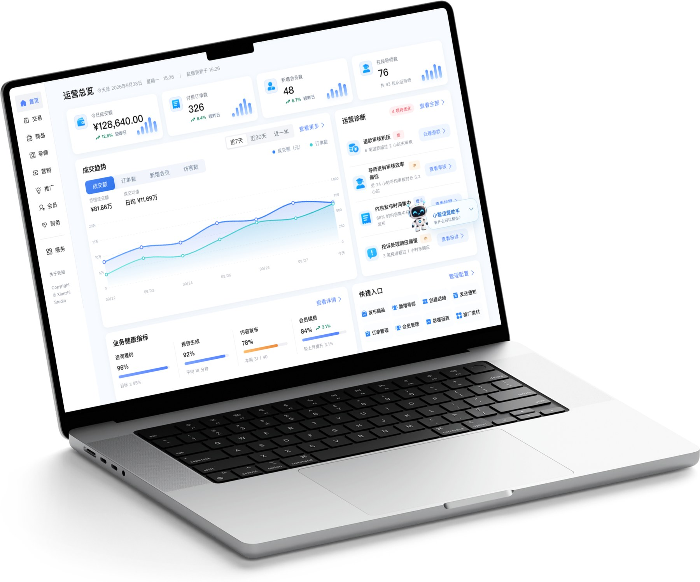
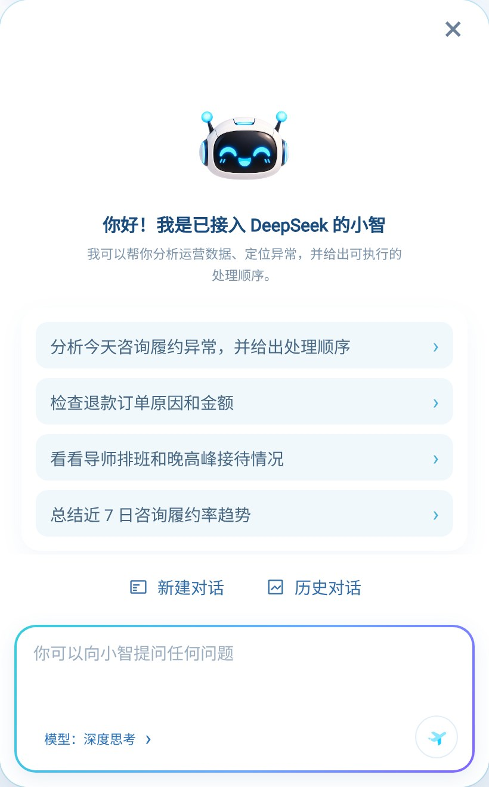
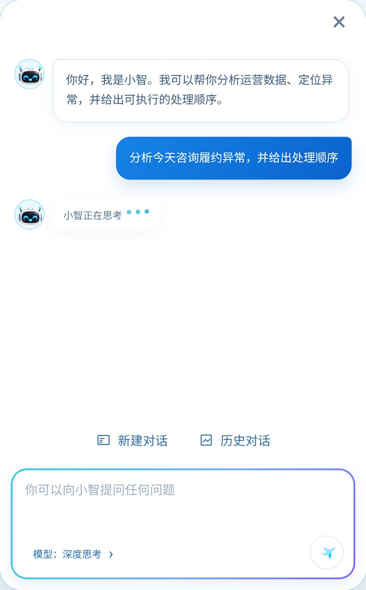
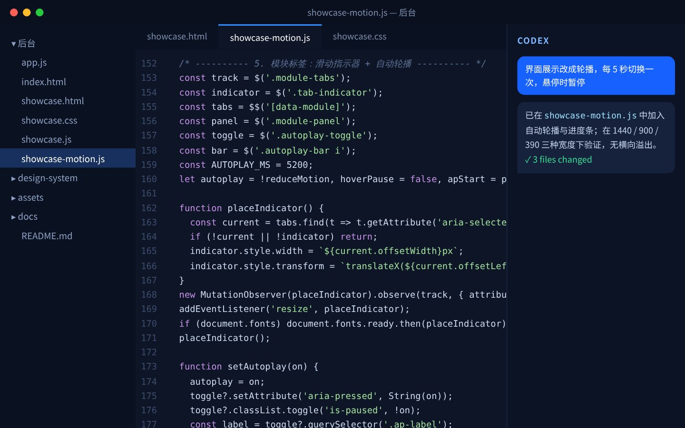
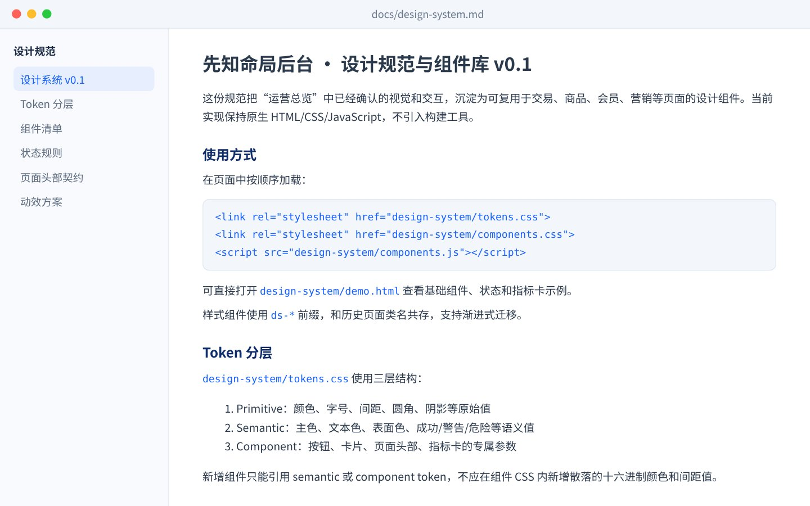
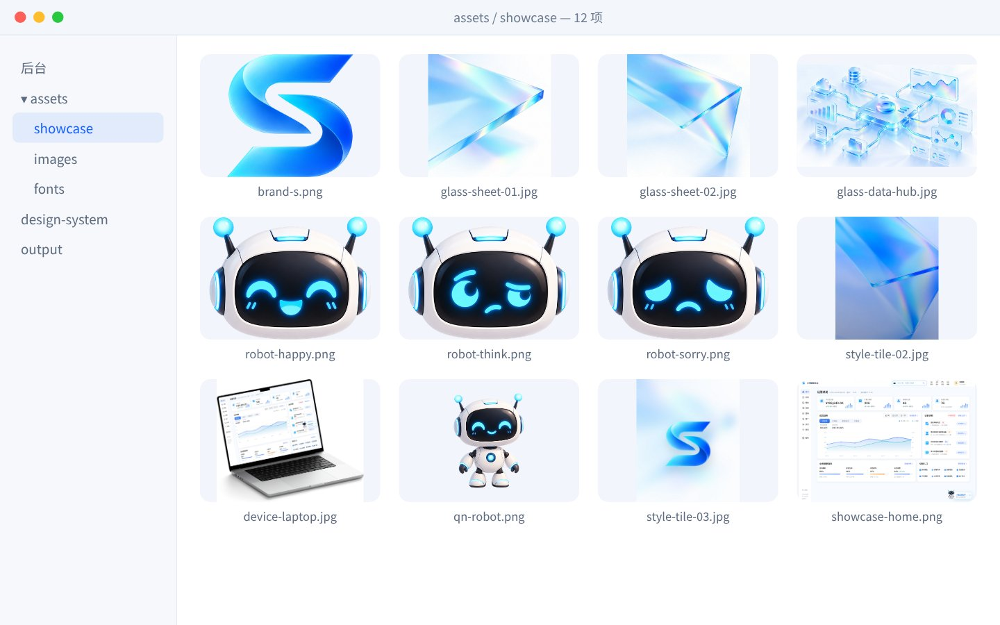
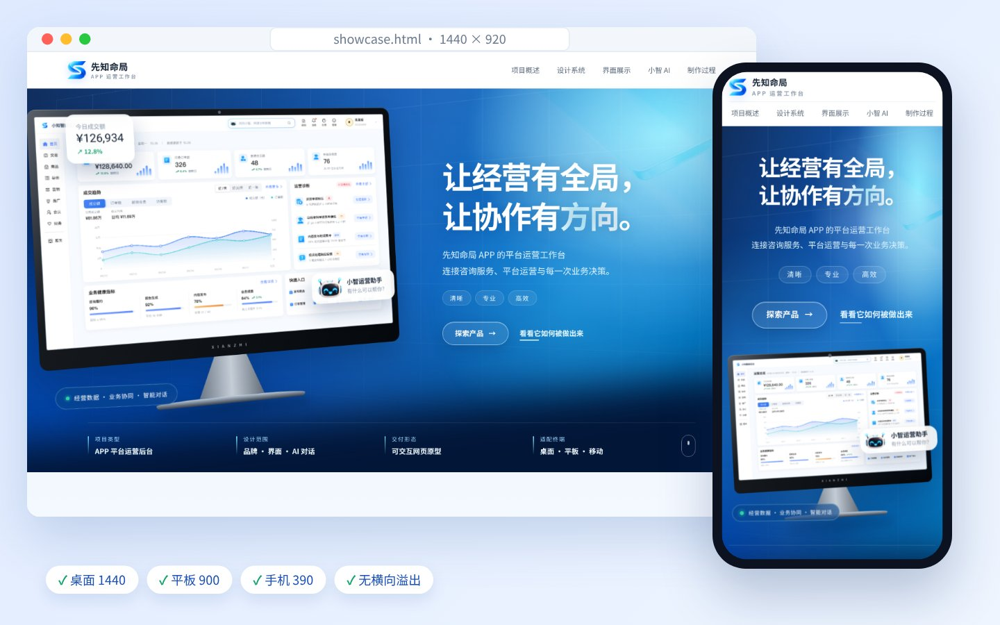

业务很多，
工作台一个就够。
这是一个面向平台运营、导师管理与财务协作的后台。把咨询订单、商品、会员、营销和结算放在同一套工作流程里——每天打开后台，先看经营情况，再处理需要跟进的业务。
8个核心业务模块
3类协作角色
1个小知对话入口
先知命局 APP 的平台运营工作台
连接咨询服务、平台运营与每一次业务决策。

为先知命局的日常经营而设计：业务很多，工作台，一个就够。
这是一个面向平台运营、导师管理与财务协作的后台。把咨询订单、商品、会员、营销和结算放在同一套工作流程里——每天打开后台，先看经营情况，再处理需要跟进的业务。
用一致的玻璃蓝视觉与清晰的信息层级，让复杂的业务流程变得可读、可控、可协作。
色彩、字体、间距与品牌组合，共同构成工作台的一套视觉语言。后台各个模块都从 design-system/tokens.css 取用同一套 Token。
首页从“功能入口”改为“运营总览”：先看结果，再看趋势，最后进入需要处理的事情。
成交额、付费订单、新增会员、在线导师；统一 25px 数值与绿/红趋势箭头。
双指标曲线，近 7 天 / 30 天 / 一年一键切换。
退款积压、审核效率等异常按优先级排列，直接给出处理入口。
履约、报告、内容、续费四项进度，配合 8 个常用操作。

01 02 03 04从经营全貌，走进每一笔业务。六个核心模块依次轮播，可拖动、点击箭头或标签切换，界面与数值来自当前交互原型。
成交额、订单、新增会员与在线导师集中呈现，结合成交趋势、运营诊断和快捷入口，找到今天的工作重点。
围绕真实业务组织工作
用户预约与下单，导师提供咨询服务，平台负责履约、售后与结算。后台把这几件事连接起来。
从经营总览发现待办，进入订单、会员和营销模块继续处理。
查看导师资料与审核进度，结合在线情况安排服务供给。
汇总支付、退款和账户明细，沿着订单线索核对资金。
从“在哪里找”，到“直接问”
用 AI 能力赋能日常运营，让复杂的业务数据一问就清楚。
例如：分析今天咨询履约异常，并给出处理顺序


小知用屏幕上的“眼睛”回应每一个状态，让等待、成功和异常都有明确的情绪反馈。
退款先处理哪一笔？导师审核还有多少？晚高峰需要关注什么？围绕运营场景，小知把信息和处理顺序放在一次对话里。
快捷问题一键开始，也可以输入自己的问题。
围绕退款、导师、履约与趋势，展示重点与建议。
在对应模块查看详情，再由运营人员完成处理。
人确定业务与审美方向，Codex 把需求落到文件、界面和交互。每一次具体反馈，都成为下一轮改进的起点。
业务需求 · 参考图 · 使用反馈
读取项目 · 编写代码 · 浏览器验证
向下滚动，逐步查看每一步的工作与产出。
读取 README、已有页面与交互代码，确认用户、导师、咨询订单和财务之间的关系。将参考图拆成视觉层级、界面展示与制作过程三条内容线。
输入 业务目标 + 参考图 + 现有项目 梳理 谁使用 → 做什么 → 需要什么信息 产出 页面结构 / 功能清单 / 内容边界
按它们在项目中承担的工作来理解。

读取现有文件、组织需求、编写与修改代码，结合反馈持续迭代。
协作与实现
参考图分析、前端设计，以及项目已有的 Token 和组件规范。
视觉与一致性
玻璃材质、品牌 S 与小知表情等主视觉素材；产品界面截图来自交互原型本身。
画面与资产
打开页面、捕获真实界面，并检查桌面和移动端表现。
检查与验证